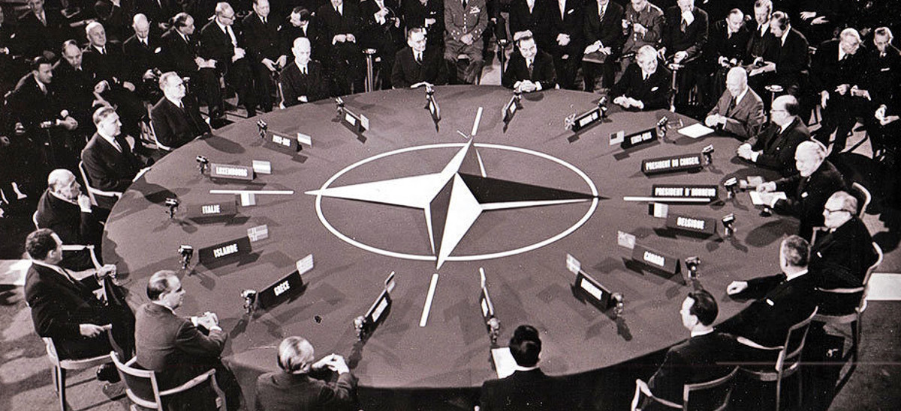
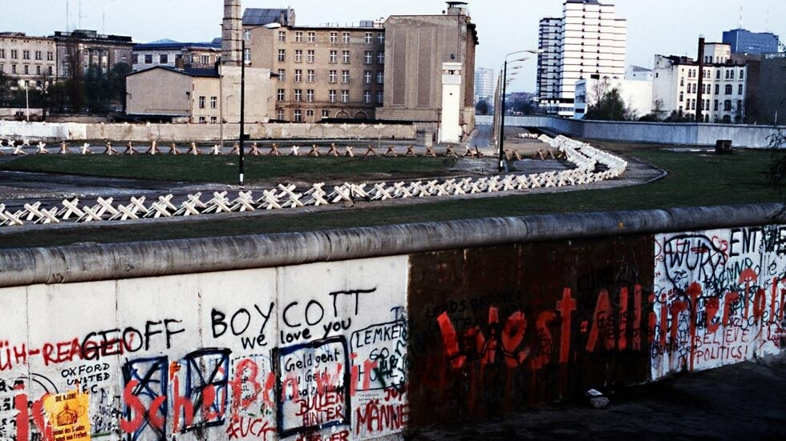

Potsdam Conference
July 1945In 1945 the presidents from the Allied powers such as President Harry Truman, Marshal Josef Stalin, and Prime Minister Winston Churchill met to solve the issues of the post-war. It was called the “Potsdam Conference” and it was held in a small town outside of Berlin. The issues included the division of Germany and other territories around the World.

The Truman Doctrine
March 1947In March 1947 the Truman Doctrine was established when President Harry S announced that the US would support any country that was resisting Soviet communism. The US would provide military, political, and economic assistance to all countries under Soviet threat. An example of this was the Greek Civil War, where the US provided $400,000,000 worth of aid to both Turkish and Greek governments. They did it so the Greek and Turkish civil wars dirent make those countries Communist.

Marshall Plan
1947-1951When World War 2 ended Europe was in ruins. As a result, the US sends 13 billion dollars to help rebuild the continent. That's what the European recovery plan or Marshalplan did. The Marshall Plan got its name from George C Marshall who was its creator. From 1947 to 1951 the US shipped food, fuel, machinery, and money to European countries. It was a strategic move for the US so it could stop the Soviet Union from influencing West Europe. The plan was a success and increased Western economies by 25% which stopped the spread of communism.

Berlin Airlift
1948-1949The Soviet Union blocked West Berlin from receiving supplies from the Allied powers. People dirent have supplies as a result Willian Turner used a fleet of 225 C-54 planes to send supplies to West Berlin. Tunner's plan was a success and drops 2.3 million pounds of supplies to West Berlin. 11 months later the Soviet Union lifted the blockade which marked a victory for the allied powers.

NATO
1949The Soviet Union installed communist governments in Eastern Europe. Toppeled a democratic government in Czechoslovakia and cut off supplies to West Berlin. As a result, the US and its allies became nervous. In 1949 foreign ministers of Western European and Northern American nations met in DC to sign the North Atlantic Treaty Organization or NATO. The nations agree that an attack on any of them would be considered an attack on all of them. The original Nato members included Belgium, Denmark, Great Britain, France, Iceland, Italy, Luxembourg, the Netherlands, Norway, Portugal, Canada, and the US. Greece and Turkey joined in 1952 and West Germany in 1955. The Soviet Union dirent want West Germany to create an army. West Germany did create an army and the Soviet Union responded by making the Warsaw Pact.

Korean War
1950In 1948 the peninsula of Korea was divided into two countries. Kim Il-Sung in the communist north, and Syngman Rhee in the capitalist south. North and South Korea did not accept the border so they decided to go to war in 1950. North Korea succeeded and got South Korea's capital and most of its country except Pusan. The United States saw that the communist ideology could spread if South Korea fell so he decided to help South Korea in the War. The UN also helped South Korea by sending help from 16 nations. On September 15 the Marines launched an assault in Inchan as a result North Korean soldiers were pushed back to the 38th Parallel. The General wanted to push back until the Chinese border, and as a result on October 12th, 1950 he captured Pyongyang and got to the Chinese border. China responded and quickly the Korean peninsula was under the control of the communists. The UN sent more military help and the army was pushed back to the 38th parallel. After 2 years of battle, an armistice was signed on July 27th, 1953 at Panmunjom on the 38th parallel. A demilitarized zone was set up which stands to this day.

Warsaw Pact
1955In 1955 the Soviet Union gathered its communist allies in Eastern Europe and sat them for a treaty signing. The treaty was called the “Warsaw Treaty of Friendship Cooperation and mutual assistance” or the Warsaw Pact. It was called the Warsaw Pact because it was signed in Warsaw, Poland. It included countries such as Poland, Czechoslovakia, Romania, Hungary, Albania, East Germany, Bulgaria, and the Soviet Union. In 1968 Albania left the Pact because it was more closely aligned with Communist China. Like Nato Warsaw Pact members were bound to come together to each other's defence if attacked by outside powers. It also created a central military command putting the Soviet Union firmly in charge. The Soviet Union also used the Pact to keep their members in line. Popular uprisings in Hungary, Czechoslovakia, and Poland were all squashed by the Soviets.

Berlin Wall
1961On August 13 East German construction workers started to build barriers through the city of Berlin. The construction of this wall lasted decades as it cut through neighborhoods separated families and divided Europe. It all started in World War 2 America, Britain, and France, joined forces with the Soviet Union against the Axis powers. When they defeated Germany each nation got a part of Germany. It was going to be temporary but they could not agree with each other's ideas. The Western countries wanted to implement liberal market economies, but the Soviet Union wanted an obedient and communist Germany. As the relationship was deteriorating the Federal Republic Of Germany was established. And the German Democratic Republic in the East. The Soviets created an impassable wall throughout their country. Goods or people were not able to pass. It became known as the Iron Curtain. They built it so people could not flee to West Berlin, which was a much more prosperous country.

Cuban Missile Crisis
1962In 1961 the US unsuccessfully tried to overthrow the new communist government in Cuba. It was known as the Bay of Pigs. The invasion convinced Cuba to get help from the USSR. The USSR helped them by giving Nuclear Missiles to Cuba to protect the island and to counteract the threat from US missiles in Italy and Turkey. The president decided to do a naval blockade but the Soviets considered it an act of War. It was almost going to be Domesday but the US saved the day by negotiating with the USSR. The US would get their nuclear missiles off from Italy and Turkey in exchange for the USSR getting their off from Cuba. The missiles were removed and the Cuban Missile Crisis was over.

SALT 1
1972The US and USSR realized how close they were to nuclear war. To make the world safer, and to not be close to nuclear war. After years of failed negotiations in 1971, the 2 nations agreed to limit the number of anti-ballistic missiles next to each other. In 1972 Richard Nixon and Soviet Premier Leonid Brezhnev gave one another a confirmation that they would start dismantling missile launch facilities, and destroy some of their nuclear missiles.

Ronald Reagan
1980The president of the US during those years Ronald Reagan escalates the war by investing more in the country's militarism. The Reagan administration implemented a new policy towards the Soviet Union, detailed in NDD-32, a National Security Decision Directive, to begin confronting the Soviet Union on three fronts: decreasing Soviet access to high technology and diminishing their resources, including depressing the value of Soviet.

Poland Solidarity Movement
1980Poland was a major problem for the Soviet Union. Their ideologies cracked with each other and their workers contained a lot of power. For example, they had made multiple presidents resign. They had multiple price spikes, which resulted in outrage from the population. Multiple strikes went on and the public demanded dozens of demands. After negotiations with the government, on the 31 of August 1980, an agreement named” the angst agreement was signed”. Most of the public demands were accepted, including the right to strike. The organization called the free trade union was formed. It became a social movement and it aims to change the political landscape. They wanted justice, democracy, truth, human dignity, freedom of conviction, and the repair of the republic. The Free Trade Union struck the government of Poland. This worried the USRR so they banned the group.

End Berlin Wall
1989On November 9th, 1989 East Germany tried to defuse tension by making travel permits easier to obtain. The announcement brought thousands of East Berlin citizens to the border crossing. This forces the guards to open the doors immediately. Crowds started to dance on top of the wall and others tried to demolish it. Guards tried to contain the people by shooting them but this was unsuccessful. Soon after Germany was united and the decades of impeding freedom were over.

End Cold War
1991Historians argue about when exactly the Cold War ended, but most agree that it was over when the countries made agreements to control nuclear and regular weapons, the soviet military left Afghanistan and Eastern Europe, and the Soviet Union fell apart.